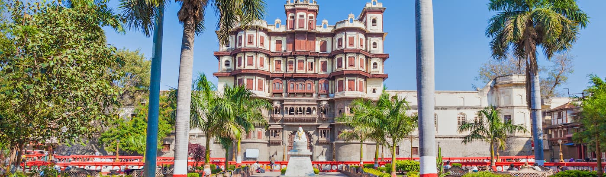
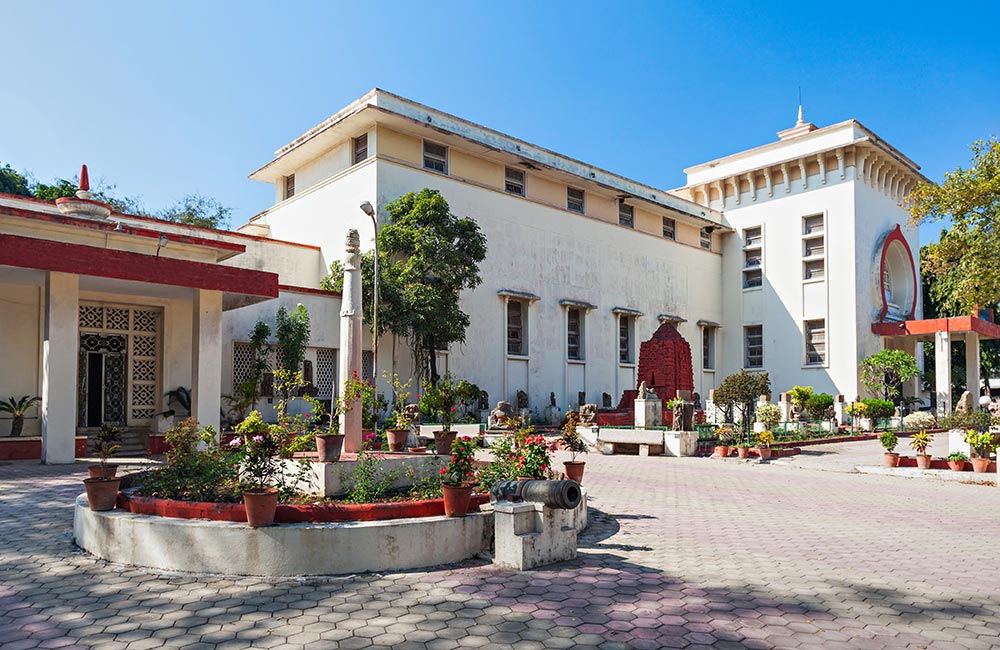
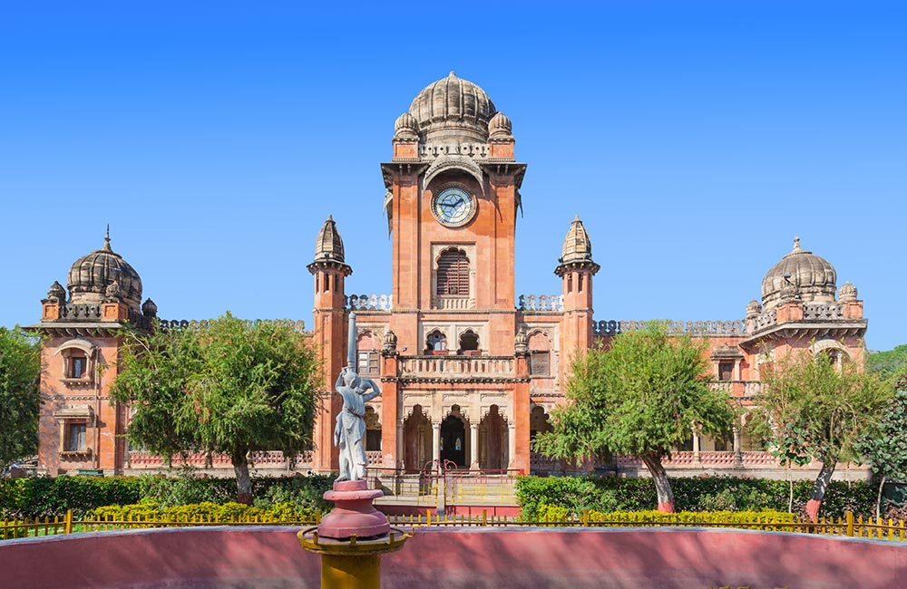

Rajwada Palace

Built in the year 1766 by the rulers of the Holkar Dynasty, the grand Rajwada Palace is one of the top places to
visit
in Indore. This seven-storied palace, which exhibits a mix of Maratha, French, and Mughal architectural styles,
is a
fine example of royal splendor. The entrance of the palace features a grand archway and a huge wooden gate
complete with
iron studs. The main building comprises a courtyard, ornate balconies and windows, jharokas, elaborately carved
wooden
jalis, corridors, and galleried rooms.
An interesting feature of Rajwada Palace is that its top floors are made of wood while the lower three floors
are carved
out of stone. The palace is now a property maintained by the State Archeology Department which also runs a small
souvenir shop within the building. The light and sound show held here in the evenings is a major attraction for
visitors.
Trivia: The palace has been damaged by fire and rebuilt not just once or twice, but three times
in the last 250 years.
Location: Rajwada Circle
Timings: 10:00 am to 5:00 pm; closed on Mondays
Entry Fee: ₹ 10 for Indian citizens; ₹ 250 for foreigners
Light and Sound Show Timings: Hindi show at 6:30 pm; English show at 7:45 pm
Light and Sound Show Tickets: ₹ 200 per person
Get Location
Lal Bagh Palace

Another one of the prominent historical places in Indore is the Lal Bagh Palace, a grand building which once served as
the residence of the Holkar rulers. Built in 1886-1921 by Maharaja Shivaji Rao, this beautiful three-storied edifice is
located on the banks of Khan River. The building features a grand entrance, a garden of roses, regal artwork by Indian
and Italian artists, and an exquisite ballroom. The ornate décor and interiors of Lal Bagh Palace, complete with
beautiful wall carvings, chandeliers, rich carpets, and marble floors, will leave you awestruck.
Today, the palace is converted into a museum where you can see an interesting range of artifacts. Needless to say, a
visit to this magnificent palace which spreads over 28 acres is one of the best things do in Indore
.
Trivia: The main gates of Lal Bagh Palace are modeled just like the gates of Buckingham Palace in London.
Location: Indira Nagar
Timings: 10:00 am to 5:00 pm; closed on Mondays
Entry Fee: ₹ 10 per head
Get Location
Central Museum

The Central Museum, also known as Indore Museum, is where you can travel back in time and learn a thing or two about the
region’s rich past. But that’s not all. The building also serves as one of the major historical places in Indore.
The museum was established during the colonial period, back in 1929, and features a fine collection of prehistoric
objects, relics, coins, Parmar scriptures, medieval and pre-medieval Jain and Hindu scriptures, arms and armors, and
others. A must-visit place for history buffs, it is one of the best museums in Indore.
Location: Navlakha
Timings: 9:00 am to 5:00 pm; closed on Mondays and government holidays
Entry Fee: ₹ 10 for Indians; ₹ 100 for foreigners
Krishna Pura Chhatris

Another important historical place to visit in Indore is the Krishna Pura Chhatris, which comprises of three chhatris or
cenotaphs. These structures house the remains of the deceased members of the Holkar Dynasty and hence are also called
the Holkar Chaatris. Built in the 19th century over the place where these rulers were cremated, the place is named after
Krishna Bhai Holkar, who was the wife of the famous military leader Yashwantrao Holkar.
Located on the banks of the River Khan or Kahn, these chhatris are a made of stones and also feature statues of
soldiers, elaborate carvings of gods and goddesses on the exteriors, and a Krishna temple built for Maharani Krishna
Bhai. Krishna Pura Chhatris are located a short walk away from Rajwada Palace, so you can cover both these monuments in
one go.
Location: Mahatma Gandhi Road, Rajwada
Timings: 9:00 am to 5:00 pm
Entry Fee: Free
Get Location
Gandhi Hall

When you make a list of places to visit in Indore, don’t forget to include the Gandhi Hall, the most prominent
historical building in the city. Built in 1904, the building features the Indo-Gothic style of architecture. The clock
tower, minarets, and domes of the structure add to its grand appeal.
The building was initially named King Edward Hall and was renamed as Gandhi Hall shortly after India’s independence.
Currently, it serves as the town hall of Indore and many cultural and art exhibitions are held here.
Trivia: Guess who inaugurated the Gandhi Hall back in 1905? None other than George V, the then Prince of Wales!
Location: Mahatma Gandhi Road
Timings: 10:00 am to 6:00 pm
Entry Fee: Free
Get Location